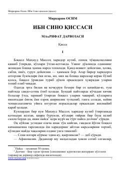

ISBuyuk alloma Ibn Sinoning bolalik yillari va ilmga ilk qadamlari haqidagi tarixiy qissa.
Ushbu asar buyuk alloma va tabib Ibn Sinoning bolalik yillari va uning ilmga bo'lgan ilk intilishlari haqida hikoya qiladi. Asarda yosh Husaynning ustozlar qo'lida ta'lim olishi va uning kelajakdagi ulug'vor yo'liga qo'ygan dastlabki qadamlari tasvirlangan.